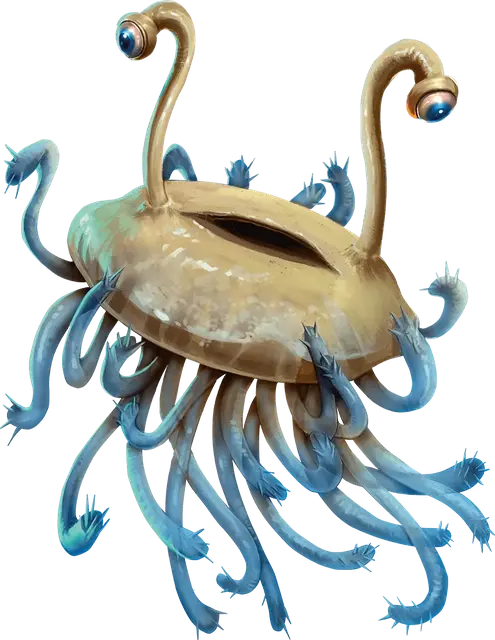

Фламф
Flumph
Маленькая Аберрация, законно-добрая

Класс Доспеха 12
Хиты 7 (2к6)
Скорость 5 футов, летая 30 футов
| мод | спас | ||
|---|---|---|---|
| СИЛ | 6 | −2 | −2 |
| ЛОВ | 15 | +2 | +2 |
| ТЕЛ | 10 | +0 | +0 |
| мод | спас | ||
|---|---|---|---|
| ИНТ | 14 | +2 | +2 |
| МДР | 14 | +2 | +2 |
| ХАР | 11 | +0 | +0 |
Навыки История +4, Магия +4, Религия +4
Уязвимость к урону психическая энергия
Чувства тёмное зрение 60 футов, пассивное Восприятие 12
Языки понимает Подземный, но не может говорить, Телепатия 60 фт.
Опасность 1/8 (25 опыта)
Бонус мастерства +2
Среда обитания Подземье
Особенности
Улучшенная телепатия. Фламф может воспринимать содержание любого телепатического общения, происходящего в пределах 60 футов от него, и не может быть захвачен врасплох существами, обладающими любой формой телепатии.
Беспомощность лёжа. Если фламф сбит с ног, бросьте любую кость. Если выпадет нечет, фламф падает на спину и становится недееспособным. В конце каждого своего хода фламф может совершать спасбросок Ловкости Сл 10, переворачиваясь в случае успеха и переставая быть недееспособным.
Телепатический покров. Фламф обладает иммунитетом ко всем эффектам, чувствующим его эмоции и читающим его мысли, а также всем заклинаниям школы Прорицания.
Действия
Усики. Рукопашная атака оружием: +4 к попаданию, досягаемость 5 футов, одно существо. Попадание: Колющий урон 4 (1к4 + 2) плюс урон кислотой 2 (1к4). В конце каждого своего хода цель должна совершать спасбросок Телосложения Сл 10, получая урон кислотой 2 (1к4) при провале или оканчивая продолжительный урон кислотой при успехе. Заклинание малое восстановление [lesser restoration], наложенное на цель, тоже оканчивает продолжительный урон кислотой.
Вонючие брызги (1/день). Все существа в 15-футовом конусе, исходящем от фламфа, должны преуспеть в спасброске Ловкости Сл 10, иначе будут покрыты дурно пахнущей жидкостью. Обрызганное существо испускает отвратительную вонь 1к4 часа. Обрызганное существо отравлено, пока воняет, а другие существа отравлены, пока находятся в пределах 5 футов от обрызганного существа. Существо может избавиться от вони, потратив короткий отдых на купание в воде, спирте или уксусе.
Описание
«ВЕРЬТЕ ФЛАМФУ»
— ПЕРВОЕ ПРАВИЛО ВЫЖИВАНИЯ В ПОДЗЕМЕЛЬЯХ МИСТИКА X
Таинственные фламфы перемещаются по Подземью за счёт испускаемых потоков воздуха, звучание которых и дало название этим существам. Фламфы слегка светятся, выражая своё настроение цветом. Нежно-розовый говорит о том, что существо довольно; тёмно-синий говорит о печали; зелёный выражает заинтересованность; красный — злость.
Разумные и мудрые. Фламфы общаются при помощи телепатии. Выглядят они как медузы, но обладают огромным интеллектом, мудростью и обширными знаниями в религии, философии, математике и множестве других предметов.
Фламфы чувствуют эмоциональное состояние ближайших существ. Если мысли существа говорят о добрых намерениях, фламф стремится к нему. А встретив существо, излучающее зло, фламф скроется.
Высасывание псионики. Фламфы питаются, высасывая ментальную энергию из псионических существ, и их можно обнаружить близ поселений свежевателей разума, аболетов, гитъянки и гитцераев. Пассивно паразитируя, они поглощают только необходимый им объём ментальной энергии, и большинство существ не ощущает потерь или дискомфорта от этого.
Поглощение псионической энергии открывает им мысли и эмоции существ, от которых фламфы питаются. Из-за того, что большинство этих существ злы, фламфы часто подвергаются воздействию их мыслей, эмоций и чаяний, которые отравляют чистую природу фламфов. Когда фламфы встречают добросердечных искателей приключений, они с радостью делятся тёмными секретами, о которых они узнали, в надежде, что это поможет повергнуть злые источники этих тайн, даже если это будет означать, что им придётся искать новый источник пропитания.
Общество фламфов. Фламфы живут сложными и организованными группами, называемыми клуатрами. В клуатре у каждого фламфа есть своё место и назначение. Такие гармоничные группы не нуждаются в лидерах, так как все фламфы вносят индивидуальный вклад в общее дело.